Curators of Secondhand Soul & Archival Relics.
"Fast fashion expires in weeks. Authentic vintage was built to outlive its original decade."
Founded by lifelong collectors, Vintage Clothing & Thrift Boutique began as an intimate atelier restoring European workwear and Parisian silks wardrobes.
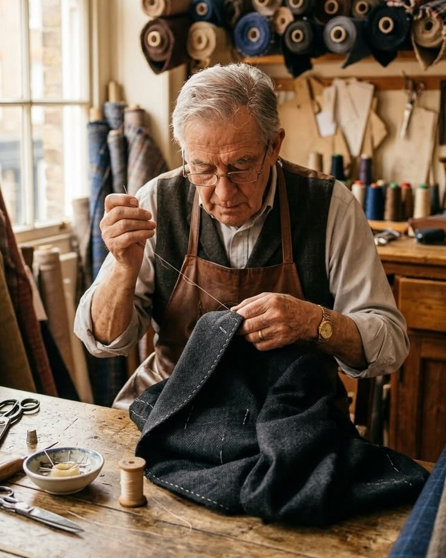
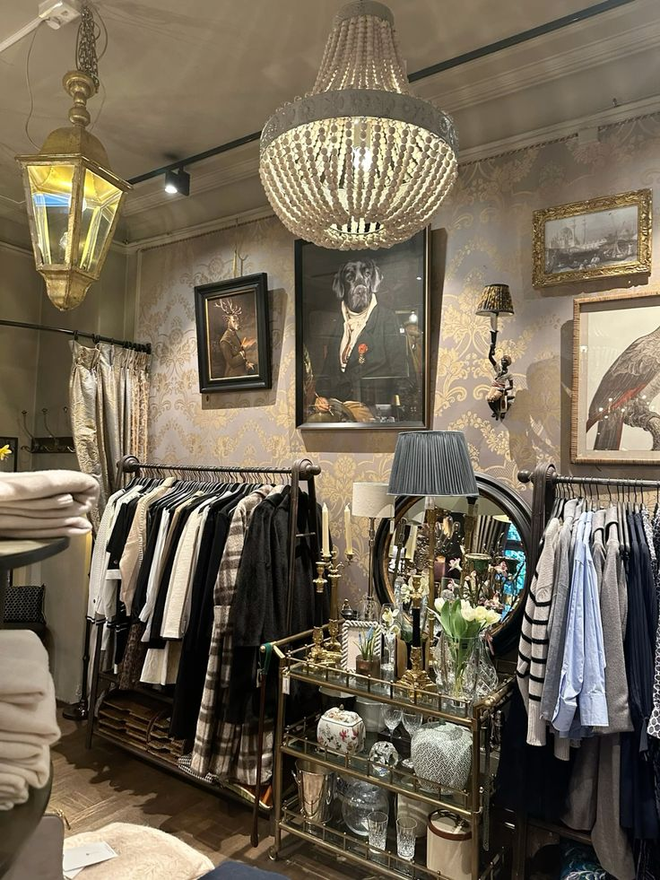
The Four Tenets of Our Craft
We are more than a thrift store; we are guardians of textile culture, sustainable stewardship, and enduring design integrity.
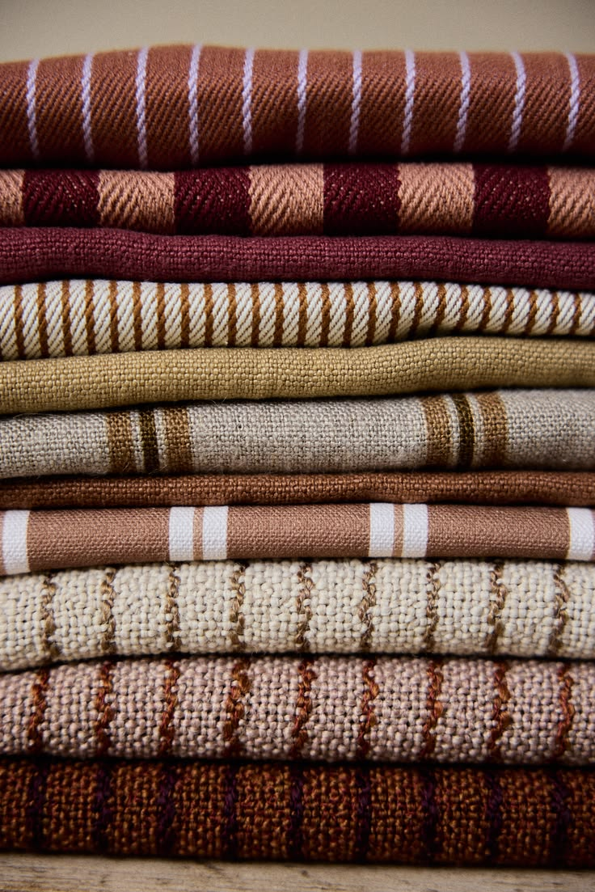
Radical Longevity
Prioritizing natural fibers (dense wool, unwashed raw cotton, pure mulberry silks) that withstand generations.
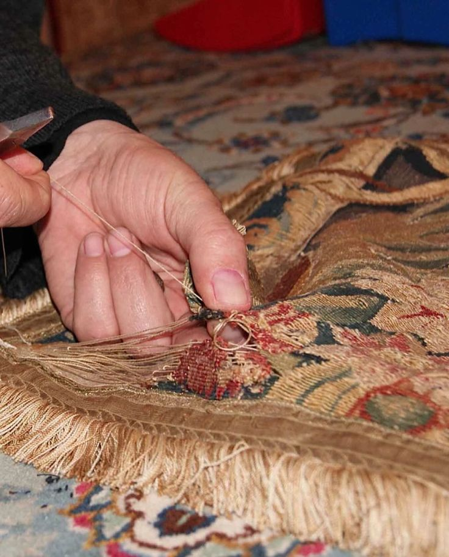
Invisible Restoration
Expert artisanal patching, re-weaving, and vintage hardware replacement to preserve authentic character.
Ethical Circulation
Keeping premium garments out of landfills through fair consignor payouts and zero-landfill textile policies.
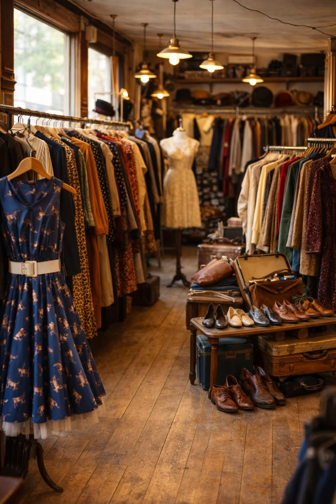
Collector Culture
Cultivating an inclusive community , there minimalist and slip dresses artists, and lovers of timeless nostalgia.
Meet Our Vintage Specialists
With decades of combined connoisseurship across European flea markets, Japanese denim looms, and American archival fashion.

Elena Rostova
Specialist in 1960s–1980s French couturiers, vintage leather treatments, and estate consignment appraisals.

Marcus Sterling
Two decades restoring rare shuttle-loom selvedge denim, union-stitch repairs, and non-invasive steam preservation.

Aria Chen
Editorial stylist known for pairing 1990s minimalist slip dresses and 70s jackets with contemporary silhouettes.
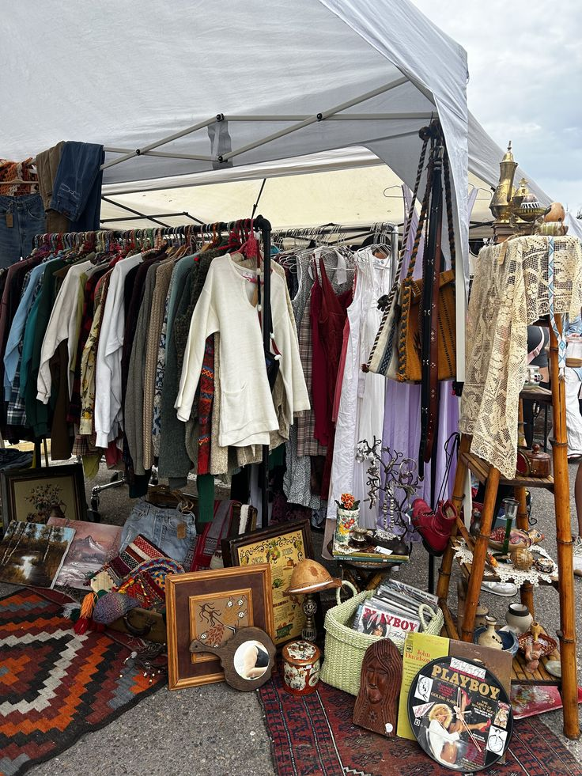
Where Our Treasures Are Discovered
We don’t rely on mass warehouse bales. We handpick each garment item-by-item across historic markets and private wardrobe estates.
Silk Tea Dresses & Tailored Trench Coats
Direct connections with Parisian collectors offering unreleased 1970s and 1980s couture garments.
Selvedge Denim & Early Y2K Archive
Rare vintage American workwear exported Japan, temperature-controlled.
Handcrafted Leather & Wool Knitwear
Artisanal leather goods, structured blazers, knitwear with original buttons.
The Living Archive: Restoring Relics to Wearable Immortality.
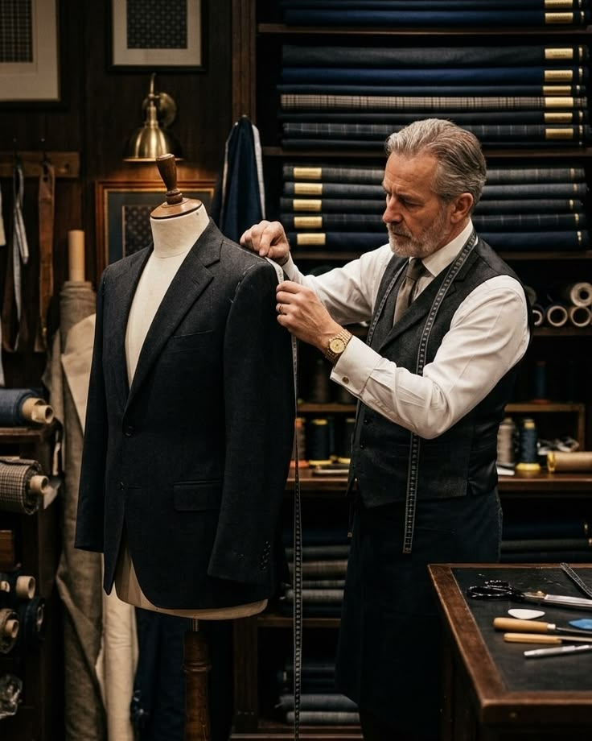
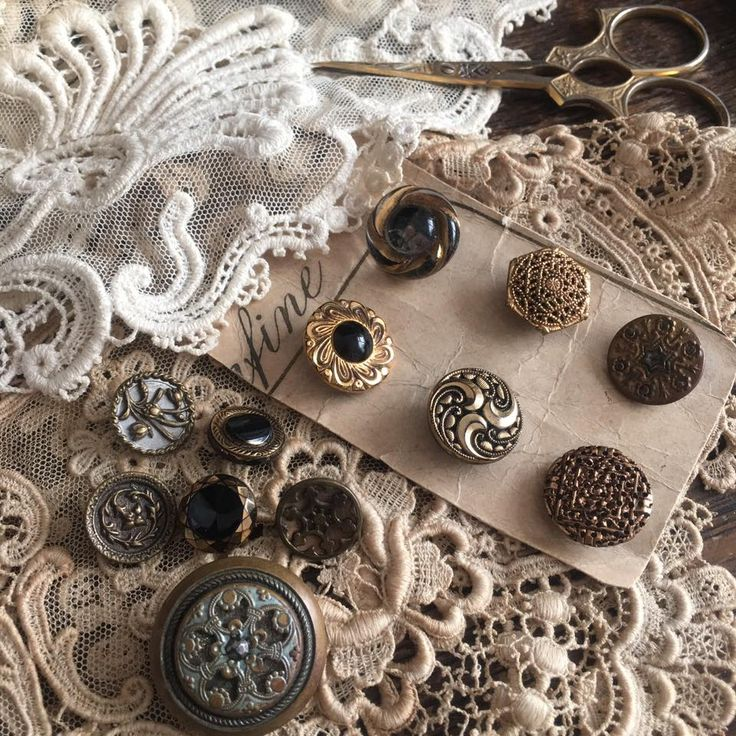
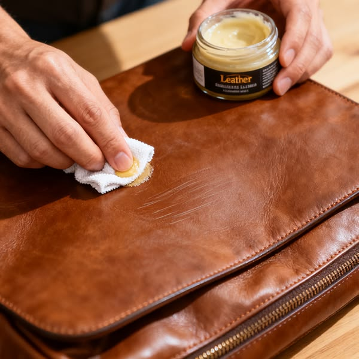
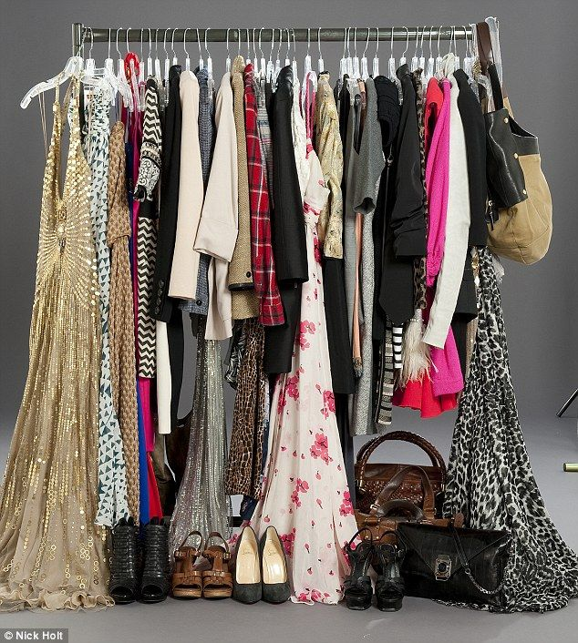
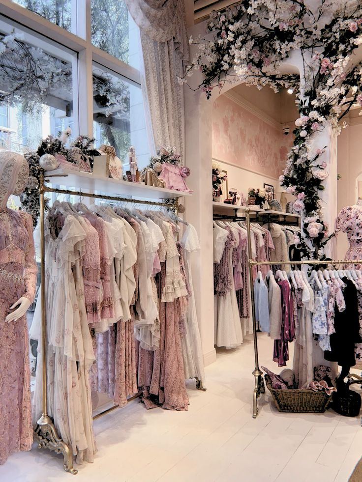
Join Our Circular Fashion Movement.
Whether you are hunting for your dream 1970s floral gown or seeking a trusted home to consign your cherished vintage heirlooms, our doors are open.